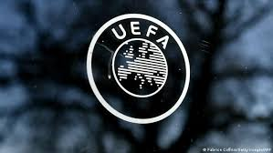

 El fútbol es el deporte más popular en numerosos países de Europa, y uno de los más populares en prácticamente todo el continente. Las reglas modernas del fútbol se dictaron en Londres en 1863 por parte de The Football Association. La Copa FA se creó en 1871 y el primer partido de selecciones nacionales se jugó en 1873 entre Inglaterra y Escocia. Los europeos han ganado 12 de las 22 ediciones de la Copa Mundial de Fútbol. La UEFA es el ente rector del fútbol europeo desde 1954. La principal competición de clubes es la Liga de Campeones de la UEFA, disputada por primera vez en 1955. También organiza la Eurocopa de selecciones masculinas desde 1960 y la Eurocopa Femenina desde 1984. Las ligas nacionales más populares y poderosas del mundo son europeas, en particular la Premier League de Inglaterra, la Primera División de España, la Serie A de Italia, la Bundesliga de Alemania y la Ligue 1 de Francia.